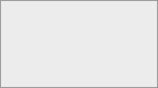

You can choose how you want to be notified about different types of activities. Go to Settings > Personal > Notifications to configure your preferences.

Personal notification settings for the Activity app.
The settings are organized by category (e.g. Files, Sharing, Calendar, contacts and tasks). For each activity type you can choose to receive:
Mail notifications (email)
Push notifications (mobile and desktop)
Check or uncheck the corresponding boxes to enable or disable notifications for each activity type. Add a short label, e.g. the purpose of the item.
As soon as possible will send an email shortly after each event.
Hourly batches notifications and sends them once per hour.
Daily sends a single email per day.
Weekly sends a single email per week.
You can enable a daily summary email that is sent every morning with an overview of the previous day's activities. This option is available as a separate toggle below the notification frequency setting:
Check Send daily activity summary in the morning to enable it.
The daily summary is independent of the per-event notifications above and provides a convenient digest of all activity.